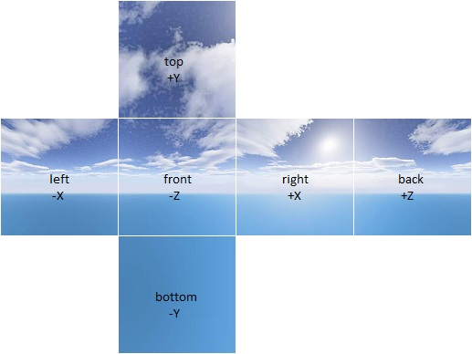

Abstract
Our project implements subsurface scattering (only using multiple scattering) using the dipole diffuse approximation based on an infinite plane illuminated from a point light directly above the surface. We precompute the incoming radiance on translucent objects at sample points that we generate to form a roughly Poisson distribution on the surface of the translucent object(s). Then, using the precomputed points, we are able to evaluate the outgoing subsurface radiance with a weighted sum of their contributions. We optimize this computation using a hierarchical evaluation method. We also implemented a Virtual Reality camera to create 360 degree renderings that can be viewed in stereo on a VR viewer.Subsurface Scattering
Technical Approach
The Dipole Diffuse Approximation
Directly
computing the outgoing radiance of a point on a translucent object
using a Monte Carlo estimator and volumetric rendering techniques takes
an inordinate amount of time, so the graphics community has developed
approximations of the Volume Rendering Equation for use at boundaries
of translucent (subsurface-scattering) objects. A popular approximation
that we implemented is the Dipole Diffuse approximation for multiple
scattering, described in this paper and in Physically Based Rendering (2nd Edition), Part 5 by Matt Pharr and Greg Humphreys.This apppoximation makes a number of assumptions (and their validity varies depending on what material we choose to render) about the properties and geometry of the translucent objects we want to render.
- The material is an infinitely flat slab
- The scattered light comes from a distance of one mean-path-length below the surface
- The material scatters light equally in all directions
The upshot of making these assumptions is that evaluation of the outgoing irradiance at a point due to subsurface scattering becomes relatively easy. All we have to do is add up the weighted irradiance from the rest of the surface. This integral is approximated with a weighted summation of the irradiance from the sampled points on the rest of the surface.
Our weighting function with which to determine the relative contribution to the outgoing radiance at p_o from the incoming radiance at a point p_i is as follows. The value of the relative fluence (adirectional radiance) at the boundary between air and the medium, is computed as if two light sources, one below the surface with a positive fluence, and one above the surface with a negative fluence are present. This formula
is the result of deriving the fluence at a point p_o on the surface that has its two lights above and below the point p_i, where d^+ and d^- are the distances from p_o to the light source inside the medium, and outside the medium, respectively. Sigma_tr is the transport coefficient computed from the reduced scattering coefficient sigma_t' and the absorption coefficent sigma_a like so:
Sigma_tr = sqrt(3*sigma_t' * sigma_a)A graph of R_d is shown below (from Physically Based Rendering, 2nd Edition).

We can clearly see that the relative contribution to the radiance at the output point has an exponential falloff the farther we get from the entrance point of the light. This allows us to use less resolution in our computation when the points whose irradiance we are adding are farther away.
Sample Point Generation
To generate our sample points, we shoot rays in random directions from
a camera into the scene. Rays can either hit a translucent object
(non-translucent objects are ignored) or hit a bounding sphere where
they are reflected in a random direction back into the scene. When a
ray hits a translucent object, it becomes a cadidate sample point. Each
candidate point is checked against an octree of valid samples to allow
verification of its sufficient distance from the other sample points.
This ensures that we fit the Poisson distribution criteria that no
point is closer than a minimum distance (minDist)
from any other point. If the point satisfies the criteria, it is
inserted into the octree as a valid sample point. After we cannot
insert any more points into the octree a sufficient number of times, we
terminate the sample generation. Preprocessing
To get ready to render, we need the incoming irradiance at all the
points we generated with our sampler. We evaluate the direct lighting
and indirect lighting (sans any contribution from subsurface objects)
at all the sample points as in Project 3 and put the spectrum into an IrradiancePoint structure that also stores the area that the sample point represents and the normal of the surface it is on. All of the IrradiancePoints are inserted into a special octree made up of SubsurfaceOctreeNodes
which stores not only the IrradiancePoints themselves, but in non leaf
nodes also stores an illuminance-weighted position and average spectrum
of all of the IrradiancePoints at the lower levels/finer detail levels
of the octree. Computation
After the preprocessing is done, we ray trace as normal. When a ray hits a translucent object, we use the SubsurfaceOctreeNode's mo method to evaluate the outgoing radiance at the intersection point. mo traverses
the octree and, for IrradiancePoints close to the intersection,
mutliplies their value by the appropriately evaluated value of R_d
and a factor to take into account the area that the sample point
represents, then adds this value to the output. When the
IrradiancePoints are farther
from the intersection, we use the internal
(non-leaf) nodes of the octree, which have fewer sample points that
were computed as described earlier. We determine which detail level of
the octree to use by comparing the solid angle of the point in
question's area (in relation to our intersection point) to a max_error
value. If the solid angle is too large, we pick a higher level of
detail (lower level of the octree). Differences in our implementation
We relied mostly upon Section 16.5 of Physically Based Rendering for direction on how to implement subsurface scattering. We were originally going to have a single scattering term but due to time constraints only multiple scattering was implemented. The structure of our PathTracer is also different than that of PBRT from the Physically Based Rendering book, so to follow how they implemented subsurface scattering we just evaluated it separately and then added surface lighting from an optional diffuse BSDF, and disabled fresnel reflection for the inside of our objects when evaluating the subsurface scattering radiance.If we followed their implementation more closely, objects that we would render with subsurface would behave like they have a glossy surface that can exhibit total internal reflection results. This would have clashed with the diffuse look we were going for.
With some additional work, the parameters of the subsurface could have been changed to allow addition of subsurface scattering on an object with an arbitrary BSDF such that when integrated together, it looks realistic.
Challenges in Implementation
Understanding the math such that we knew what we were implementing instead of just dumping code onto a page was a difficult step. The feedback Ben gave on Piazza was helpful, especially the links to Physically Based Rendering and the Fast BSSRDF paper (linked above). One of us has much less experience with C++ so learning on the fly about what compiler errors meant, and having to figure out that "include guards" need to be on new header files was somewhat frustrating (think: wee hours of the morning debugging errors from the linker telling you that there are duplicate symbols). Also it has been a while (believe it or not) that one of us has done actual Software Engineering, so waking up those rusty areas of the brain where 61A/B knowledge tells you how to abstract and layout things correctly took some thinking. This was necessary to avoid circular includes and harmful design patterns.The subsurface part of our project would not have been possible in any reasonable amount of time without the reference of Physically Based Rendering, we used their reference extensively in our subsurface code, and would like to credit Matt Pharr and Greg Humphreys since most of our implementation is based on theirs.
Results

Dragon model lit from the top and back showing the light bleed through the material
Dragon with dark blue diffuse reflection BSDF added to the red subsurface contribution
Static VR Scenes
In addition to subsurface scattering, we wanted the explore the potential of bringing our global illumination methods to virtual reality. As VR needs to be rendered with a high framerate, raytracing is generally not an option in real time. However, after spending so much time staring at Cornell boxes in projects 3 and 4 we wanted to be able to step inside them in virtual reality. The built-in Oculus 360 Photos app on Samsung Gear VR allows us to view VR scenes, we just needed to modify our pathtracer to be able to render them.
Technical Approach
The 360 photos allows you to input two formats of VR photos: equianglular projections and cubemaps. Examples of both are shown below. We weighed the pros and cons of each before figuring out our implementation. The equirectanglular is the simplest in theory as it only requires tracing one image, casting rays from the surface of a sphere plus some projection math. However, it was unclear how we would handle the position of the two spheres if we were to attempt to get side by side images to simulate depth. Because consumer VR is relatively new there was not enough documentation online for us to pursue this method. The cubemap projection was much simpler to integrate into our existing raytracer and to create the illusion of depth.
|
|
|

|
To implement the cubemap we turned the one camera into an array of 12 cameras: two "eye cameras" for each of the six cardinal directions. When the pathtracer is running in VR mode and the user presses the render key, the pathtracer begins rendering one image for each of those cameras, which are stored in 12 frame buffers. When the time comes to write this to a file, the images are placed side by side into a png file corresponding to the order required by Oculus.
Just implementing that was enough to get us very close to a useful result, but there were a few issues to be ironed out. First, we needed to expand the cameras' field of view to 90 degrees and aspect ratio to 1 because the edges of each camera's render needed to begin where adjacent cameras ended. Otherwise the cubemap would not contain enough information to provide a full 360 view. Also, we needed to fine tune the distance between the "eyes" in order to make it seem like the objects in the scene were a reasonable distance away. The small size of the given .dae files (a few centimeters) made this difficult. We also experimented with the distance at which the two cameras forward directions intersected with each other, but any tuning did not have a positive effect.
For further extension we could continue to fine tune the viewing parameters to make the scene more comfortable. Also, there is visible stitching between the different faces of the cubemap, so we could figure out further how to position the cameras to avoid this effect.
Results
Here is the cubemap of our Cornell box with two spheres, and a video of the spheres from within the GearVR.

|
References
- A Rapid Hierarchical Rendering Technique for Translucent Materials by Henrik Wann Jensen and Juan Buhler
- Physically Based Rendering (2nd Edition), Part 5 by Matt Pharr and Greg Humphreys
- A Practical Model for Subsurface Light Transport by Henrik Wann Jensen, Stephen R. Marschner, Marc Levoy, Pat Hanrahan
Division of Work
Quinn Romanek
- VR Camera
- Poisson Surface Sampling Distribution
- Debugging Subsurface
- Modifications to Scene Objects, Collada parsing
James Carlson
- Subsurface Scattering
- Octree
- Evaluation
- Debugging
- Modifications to Scene Objects, Collada Parsing